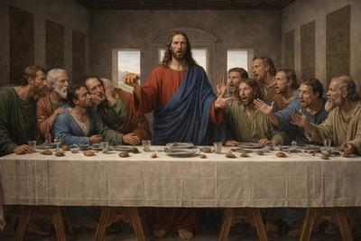

Expliquemos en primer lugar que según el sitio Biblical Archaeology Society, aunque «la tradición cristiana posterior sitúa la última cena de Jesús con sus discípulos el jueves por la noche y su crucifixión el viernes», ahora sabemos que dicha cena «fue el miércoles por la noche». Esto, a pesar de que la «cena de Pascua se celebró el jueves por la noche, al atardecer, cuando comenzaba el 15 de Nisán»[1].


Esto coincide un poco con el investigador francés Gérald Messadié, quien cree que Jesús habría decidido celebrar la Pésaj o Pascua judía el miércoles, cuarto día de la semana, 12 del mes lunar de Nisán, siguiendo la tradición de Qumrán, y conforme al «Libro de los Jubileos», aunque la generalidad de los judíos la celebraba en Sabbat, es decir, el séptimo día de la semana, 14 de Nisán, que para ellos comenzaba al atardecer del viernes. Según Messadié, como aquella sería para Jesús una Pascua muy especial, habría querido celebrarla discretamente en Jerusalén el día miércoles[2]. Además, la idea era que, ya para el propio Sabbat, Jesús estaría crucificado.
Pero independiente del día en que se supone que ocurrió, este episodio constituye uno de los momentos más densos, simbólicos… y también, ¿por qué no?, extrañamente dramáticos de los evangelios canónicos. Lejos de ser una simple despedida íntima, el relato combina gestos desconcertantes, discursos cargados de emoción, y una serie de ideas que, fuera del enfoque devocional, realmente causan estupor.
Quien haya leído los textos evangélicos, se da cuenta de que Jesús sabía perfectamente que su final estaba próximo. No era una víctima ingenua del destino, sino alguien que había producido aquel desenlace, provocando calculadamente tensiones con las autoridades religiosas y políticas de su tiempo. Y aunque en aquel contexto cabría esperar por parte de él un comportamiento sobrio, reflexivo, quizá centrado en despedirse, o en ofrecer consuelo a sus seguidores, lo que encontramos es una secuencia de acciones que oscilan entre lo simbólico y lo francamente desconcertante.
Uno de los hechos más curiosos aparece sólo en el Evangelio de Juan. Súbitamente, durante la cena, Jesús se levanta, se quita el manto, toma una toalla, vierte agua en un recipiente y comienza a lavar los pies de sus discípulos (Juan 13:3-5). La escena, por supuesto, ha sido interpretada durante siglos como un gesto sublime de humildad. Sin embargo, observada con cierta distancia crítica, resulta al menos peculiar.
Primero, por lo inesperado: no hay preparación narrativa previa, no hay transición. Simplemente ocurre. Segundo, por el contraste con otras actitudes atribuidas a Jesús en los evangelios, donde, lejos de promover normas de higiene, parece más bien desestimarlas o incluso criticarlas. Era sin duda extraño que, en sus últimas horas de vida, Jesús se interesara en que sus discípulos tuvieran limpios los pies al tomar los alimentos, cuando nunca se interesó en que se lavaran las manos para comer, y hasta llegó a criticar ese hábito de higiene (Mateo 15:1-20, Marcos 7:1-23, Lucas 11:37-54). Esto es algo que resulta, cuanto menos, incongruente.
Algunos, como Messadié, han llegado incluso a especular, con interpretaciones psicopatológicas ciertamente discutibles de este gesto, que pudo tratarse de un arrebato de podofilia por parte de Jesús. Pero sin necesidad de ir tan lejos, basta señalar que la extravagante escena parece diseñada más como una lección moral dramatizada, que como un comportamiento espontáneo y natural en una cena de despedida.
Pero si el lavado de pies resulta curioso, lo que sigue eleva la incomodidad a otro nivel: también de pronto, Jesús invitó a sus discípulos a comer su cuerpo y beber su sangre (Juan 6:48-51), una idea antropófaga, caníbal, grotesca y macabra, que —aunque fuera simbólica— tendría que haber repugnado a los presentes, quienes eran judíos observantes (Juan 6:52). Definitivamente, a ninguno le habría resultado agradable la idea de tomar —aunque fuera simbólicamente— parte del cuerpo de Jesús, para después comerla asada como si fuera su cordero pascual. Por lo que entramos aquí en un terreno donde el simbolismo religioso roza lo grotesco si se lo toma al pie de la letra.
Y aunque los relatos de la institución de la eucaristía aparecen en los sinópticos, el Evangelio de Juan desarrolla esta idea de forma particularmente explícita en el discurso del «pan de vida» (Juan 6:48-57). Allí, Jesús insiste en que quien no coma su carne ni beba su sangre no tendrá vida, mientras que quien lo haga vivirá eternamente.
Pero el problema es evidente: para un judío del siglo I, esta propuesta no sólo era extraña y repugnante, sino profundamente ofensiva. La propia Torá prohíbe de forma tajante el consumo de sangre (Levítico 17:14), considerándola portadora de la vida. Por lo que no es de extrañarse que los oyentes reaccionaran con desconcierto y debate. «¿Cómo puede éste darnos a comer su carne?», preguntaban (Juan 6:52). La escena, lejos de ser de una aceptación reverente, parece haber generado un auténtico escándalo.
Sin embargo, desde una perspectiva antropológica, la idea tampoco es tan original. El concepto de teofagia —es decir, consumir el cuerpo de una divinidad para apropiarse de sus atributos— está ampliamente documentado en diversas culturas antiguas. El antropólogo escocés James George Frazer, en su obra «La rama dorada», describe rituales en los que los fieles consumían alimentos que representaban a sus dioses, creyendo participar así de su esencia divina.
Ejemplos sobran: desde los rituales mesoamericanos asociados al dios mexicano Huitzilopochtli, cuya imagen era elaborada con masa de maíz y luego consumida, hasta prácticas en la India antigua, donde alimentos rituales eran considerados transformaciones reales de cuerpos humanos o divinos. E incluso en el ámbito grecorromano, el culto a Dionisio vinculaba el vino con la sangre del dios, en un simbolismo sorprendentemente cercano al cristiano.
En tal sentido, la eucaristía cristiana parece menos una idea innovadora de Jesús, y más una adaptación de ideas ya presentes en el entorno cultural helenístico del Imperio romano. El problema, claro está, es que tales conceptos no encajaban con la tradición judía, de la que Jesús y sus discípulos formaban parte.
Sin duda, aquello que para el cristianismo posterior se convirtió en uno de sus rituales más sagrados —la comunión—, en su contexto original debió sonar, como mínimo, repugnante. La imagen de ingerir simbólicamente el cuerpo y la sangre de un líder religioso, aunque revestida de teología refinada, conserva un trasfondo que no deja de ser desagradable.
Digamos pues, en conclusión, que el episodio de la Última Cena, lejos de ser sencillo o puramente edificante, es un mosaico de gestos simbólicos, tensiones culturales y elementos que, vistos sin la lente de la fe, resultan tan sorprendentes como repulsivos. Entre lavatorios podofílicos inesperados y propuestas de teofagia, el relato nos recuerda que las religiones no sólo elevan lo cotidiano: a veces también lo vuelven, inevitablemente, extraño.
[Godless Freeman]
Comentarios
Comments powered by Disqus